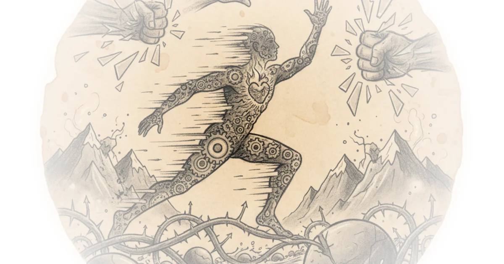
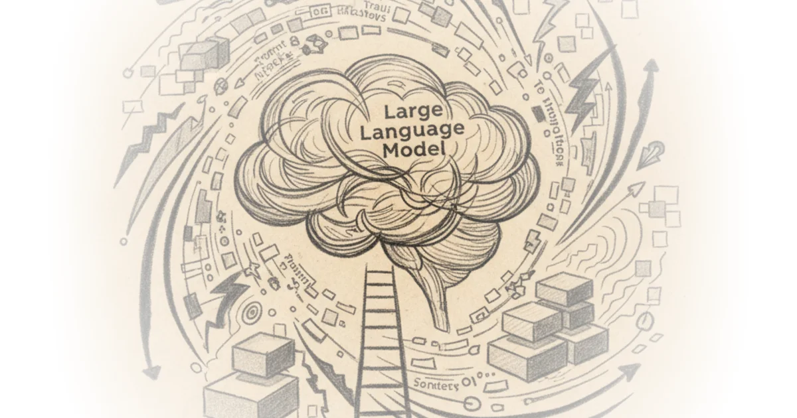

Are the strongest nor'easters getting stronger? A closer look Roger Pielke Jr. · The Honest Broker ·Feb 24, 2026 · 16 min read · Culture
Breath, conscience, and the winter i was cast out Various · Natural Selections ·Feb 24, 2026 · 10 min read · Science
We uncovered the most infamous secret society: And the truth is shocking More Perfect Union · More Perfect Union ·Feb 24, 2026 · 15 min read · Culture
Rubio to brief congress on Iran before sotu; gaza hit by flooding; rsf kills 28 in North darfur Ryan Grim & Jeremy Scahill · Drop Site ·Feb 24, 2026 · 16 min read · Foreign Policy
Could republicans blow the Texas senate race? Eli McKown-Dawson · ·Feb 24, 2026 · 11 min read · Political Strategy
Prompt engineering is dead. Context engineering is dying. What comes next changes everything Nate B Jones · Nate B Jones ·Feb 24, 2026 · 24 min read · AI & Tech
"I don't want an easy faith, i want a brave faith." Sarah Bessey · Sarah Bessey's Field Notes ·Feb 24, 2026 · 13 min read · Faith
The mad king takes the mic Sarah Longwell, Tim Miller, Bill Kristol · The Bulwark ·Feb 24, 2026 · 11 min read · Political Strategy
The bureaucratisation of Chinese research: More money and less innovation – by zhang Hong, a… Various · Sinification ·Feb 24, 2026 · 23 min read · China
New paper: Towards a science of AI agent reliability Arvind Narayanan & Sayash Kapoor · AI Snake Oil ·Feb 24, 2026 · 11 min read · AI & Tech
When “state influence” becomes a shortcut Zichen Wang · Pekingnology ·Feb 24, 2026 · 17 min read · China
Ahead of state of the union, approval falls to new low of 37% G. Elliott Morris · G. Elliott Morris ·Feb 24, 2026 · 10 min read · Political Strategy
From the archives: I commanded u.s. Army Europe. Here’s what i saw in the Russian and Ukrainian… Sarah Longwell, Tim Miller, Bill Kristol · The Bulwark ·Feb 24, 2026 · 25 min read · Political Strategy
February 23, 2026 Heather Cox Richardson · Letters from an American ·Feb 24, 2026 · 11 min read · History
Tim ferriss on how he survived suicidal depression and his tools for warding off the darkness Maria Popova · The Marginalian ·Feb 23, 2026 · 11 min read · Culture
Iranian officials to drop site: Tehran is showing “unbelievable level of flexibility" in talks to… Ryan Grim & Jeremy Scahill · Drop Site ·Feb 23, 2026 · 12 min read · Foreign Policy
Desert disruptors and acquisition truths Various · Defense Tech and Acquisition ·Feb 23, 2026 · 63 min read · Defense
War propaganda and Iran: The exact script used for every failed US war is hauled out again Glenn Greenwald · ·Feb 23, 2026 · 20 min read · Foreign Policy
Still soft with sleep (a novel based on a true story) - part one: Six months, ch. 3 PILCROW · ·Feb 23, 2026 · 29 min read · Culture
It was supposed to be a routine investigation. It turned into pure terror Chris Chappell · China Uncensored ·Feb 23, 2026 · 10 min read · China
The flash season 6: Determination Andrew Heard · ·Feb 23, 2026 · 11 min read · Foreign Policy 
The epstein myth unravels: Why capitulating to hysteria only fueled prince andrew's downfall Michael Tracey · ·Feb 23, 2026 · 18 min read · Media Criticism
How large language models learn Alex Xu · ByteByteGo Newsletter ·Feb 23, 2026 · 11 min read · AI & Tech 
Shopping isn’t a strategy Eric Blanc · Labor Politics ·Feb 23, 2026 · 14 min read · Political Strategy
What kind of place makes writers? Jeannine Ouellette · Writing in the Dark ·Feb 23, 2026 · 10 min read · Writing & Craft